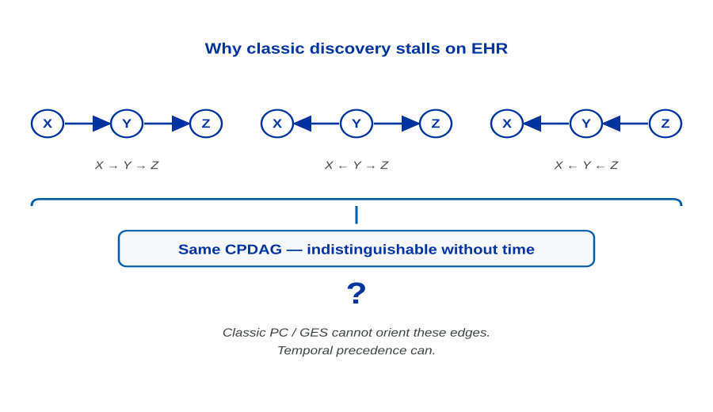
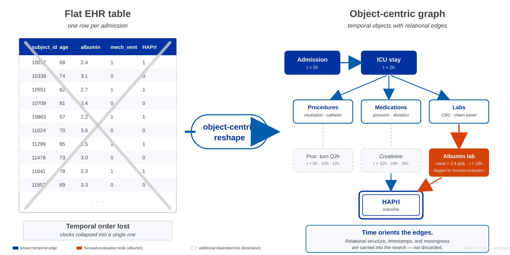
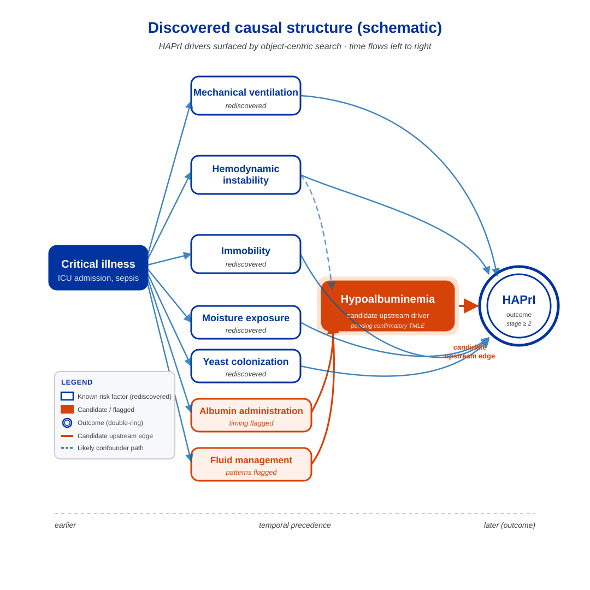

<!DOCTYPE html>
<html lang="en">
<head>
  <meta charset="UTF-8" />
  <meta name="viewport" content="width=device-width, initial-scale=1.0" />
  <title>Object-Centric Causal Discovery in MIMIC-IV | ISPOR 2026 MSR72</title>
  <meta name="description" content="Companion dashboard for ISPOR 2026 poster MSR72. Object-centric causal discovery surfaces hypoalbuminemia as a candidate upstream driver of hospital-acquired pressure injury in MIMIC-IV." />
  <link href="https://fonts.googleapis.com/css2?family=Playfair+Display:wght@400;600;700&family=Source+Sans+3:wght@300;400;500;600;700&display=swap" rel="stylesheet" />
  <link rel="stylesheet" href="https://cdn.jsdelivr.net/npm/katex@0.16.11/dist/katex.min.css" />
  <style>
    * { margin: 0; padding: 0; box-sizing: border-box; }
    .katex { font-size: 1.05em; }
    html { scroll-behavior: smooth; }
    img.figure-asset { max-width: 100%; height: auto; display: block; margin: 0 auto; }
  </style>
</head>
<body>
  <div id="root"></div>

  <script crossorigin="anonymous" src="https://unpkg.com/react@18/umd/react.production.min.js"></script>
  <script crossorigin="anonymous" src="https://unpkg.com/react-dom@18/umd/react-dom.production.min.js"></script>
  <script crossorigin="anonymous" src="https://unpkg.com/prop-types@15/prop-types.min.js"></script>
  <script crossorigin="anonymous" src="https://unpkg.com/recharts@2.15.0/umd/Recharts.js"></script>
  <script crossorigin="anonymous" src="https://cdn.jsdelivr.net/npm/katex@0.16.11/dist/katex.min.js"></script>
  <script crossorigin="anonymous" src="https://unpkg.com/@babel/standalone/babel.min.js"></script>

  <script type="text/babel">
const { useState, useMemo, useEffect, useRef } = React;
const {
  LineChart, Line, XAxis, YAxis, CartesianGrid, Tooltip, Label,
  ResponsiveContainer, ReferenceArea, ReferenceLine, Legend
} = Recharts;

/* ─── Color Palette (Boise State) ───────────────────────────────────────── */
const COLORS = {
  navy:    "#0033A0",   // primary headline, outcome stroke
  orange:  "#D64309",   // accent — hypoalbuminemia, candidate edges only
  blue:    "#005DAA",   // secondary — arrows, legends, section rules
  ink:     "#3F4444",   // body text on surface
  gray:    "#CDCDCD",   // dividers, flat-table slash
  bg:      "#fffdf9",   // page background
  surface: "#f6f8fc",   // insets, code blocks
  text:    "#1a202c",
  subtle:  "#4a5568",
  muted:   "#8a94a6",
  border:  "#d8dde5",
  cardBg:  "rgba(255,255,255,0.85)",
};

function hexAlpha(hex, a) {
  const h = hex.replace("#", "");
  const r = parseInt(h.slice(0,2), 16), g = parseInt(h.slice(2,4), 16), b = parseInt(h.slice(4,6), 16);
  return `rgba(${r},${g},${b},${a})`;
}

/* ─── Shared components ─────────────────────────────────────────────────── */

const Tex = ({ math, display }) => {
  const ref = useRef(null);
  useEffect(() => {
    if (ref.current && typeof katex !== 'undefined') {
      katex.render(String(math), ref.current, { throwOnError: false, displayMode: !!display });
    }
  }, [math, display]);
  return display
    ? <div ref={ref} style={{ margin: '4px 0', overflowX: 'auto', textAlign: 'center' }} />
    : <span ref={ref} />;
};

const MathBlock = ({ children }) => (
  <div style={{ padding: "14px 20px", background: hexAlpha(COLORS.navy, 0.04), borderLeft: `3px solid ${hexAlpha(COLORS.navy, 0.18)}`, borderRadius: "0 6px 6px 0", margin: "14px 0", overflowX: "auto" }}>
    {children}
  </div>
);

const SectionNav = ({ sections, active, onSelect }) => (
  <nav style={{ display: "flex", gap: "2px", padding: "6px", background: hexAlpha(COLORS.navy, 0.05), borderRadius: "10px", marginBottom: "32px", flexWrap: "wrap" }}>
    {sections.map((s, i) => (
      <button key={i} onClick={() => onSelect(i)} style={{
        flex: "1 1 auto", padding: "10px 14px", border: "none", borderRadius: "8px",
        background: active === i ? COLORS.navy : "transparent",
        color: active === i ? "#f7fafc" : COLORS.subtle,
        fontFamily: "'Source Sans 3', sans-serif", fontSize: "0.82rem",
        fontWeight: active === i ? 600 : 500, cursor: "pointer",
        transition: "all 0.2s", letterSpacing: "0.02em", whiteSpace: "nowrap"
      }}>
        <span style={{ opacity: 0.5, marginRight: 6 }}>{i + 1}</span>{s}
      </button>
    ))}
  </nav>
);

const InsightBox = ({ children, label = "Note", color = COLORS.blue }) => (
  <div style={{
    marginTop: 24, padding: "16px 20px",
    background: `linear-gradient(135deg, ${hexAlpha(color, 0.08)}, ${hexAlpha(color, 0.02)})`,
    borderLeft: `4px solid ${color}`, borderRadius: "0 10px 10px 0",
    border: `1px solid ${COLORS.border}`, borderLeftWidth: 4, borderLeftColor: color
  }}>
    <h4 style={{ margin: "0 0 6px", color, fontSize: "0.88rem", fontFamily: "'Source Sans 3', sans-serif", fontWeight: 700, letterSpacing: "0.05em", textTransform: "uppercase" }}>{label}</h4>
    <div style={{ margin: 0, color: COLORS.subtle, lineHeight: 1.7, fontSize: "0.92rem", fontFamily: "'Source Sans 3', sans-serif" }}>{children}</div>
  </div>
);

const GlassCard = ({ children, style }) => (
  <div style={{
    background: COLORS.cardBg, borderRadius: 12, padding: "20px 24px",
    border: `1px solid ${COLORS.border}`,
    backdropFilter: "blur(10px)", boxShadow: "0 2px 12px rgba(0,0,0,0.04)",
    ...style
  }}>{children}</div>
);

const SliderControl = ({ label, value, min, max, step, onChange, color, unit, width, format }) => (
  <div style={{ display: "flex", alignItems: "center", gap: 10, marginBottom: 10, flexWrap: "wrap" }}>
    <label style={{ fontFamily: "'Source Sans 3', sans-serif", fontSize: "0.88rem", fontWeight: 600, color: COLORS.text, minWidth: width || 200 }}>{label}</label>
    <input type="range" min={min} max={max} step={step || 0.1} value={value} onChange={e => onChange(parseFloat(e.target.value))} style={{ flex: 1, minWidth: 100, accentColor: color || COLORS.navy }} />
    <span style={{ fontFamily: "'Source Sans 3', sans-serif", fontSize: "0.9rem", fontWeight: 700, color: color || COLORS.navy, minWidth: 70, textAlign: "right" }}>
      {format ? format(value) : `${(step >= 1 ? value.toFixed(0) : value.toFixed(2))}${unit || ""}`}
    </span>
  </div>
);

const PrevNextNav = ({ active, total, onSelect }) => (
  <div style={{ display: "flex", justifyContent: "space-between", marginTop: 32, paddingTop: 20, borderTop: `1px solid ${COLORS.border}` }}>
    <button disabled={active === 0} onClick={() => onSelect(active - 1)} style={{
      padding: "10px 20px", borderRadius: 8, border: `1px solid ${COLORS.border}`,
      background: active === 0 ? "#f7f7f7" : "white", color: active === 0 ? COLORS.muted : COLORS.text,
      fontFamily: "'Source Sans 3', sans-serif", fontSize: "0.88rem", fontWeight: 600,
      cursor: active === 0 ? "default" : "pointer", transition: "all 0.2s"
    }}>&#8592; Previous</button>
    {active < total - 1 && (
      <button onClick={() => onSelect(active + 1)} style={{
        padding: "10px 20px", borderRadius: 8, border: `1px solid ${COLORS.border}`,
        background: "white", color: COLORS.text,
        fontFamily: "'Source Sans 3', sans-serif", fontSize: "0.88rem", fontWeight: 600,
        cursor: "pointer", transition: "all 0.2s"
      }}>Next &#8594;</button>
    )}
  </div>
);

const SectionTitle = ({ children, kicker }) => (
  <>
    {kicker && <p style={{ fontFamily: "'Source Sans 3', sans-serif", fontSize: "0.72rem", letterSpacing: "0.14em", textTransform: "uppercase", color: COLORS.muted, marginBottom: 6 }}>{kicker}</p>}
    <h2 style={{ fontFamily: "'Playfair Display', serif", fontSize: "1.7rem", fontWeight: 700, color: COLORS.text, marginBottom: 16, lineHeight: 1.2 }}>{children}</h2>
  </>
);

const Para = ({ children }) => (
  <p style={{ fontFamily: "'Source Sans 3', sans-serif", fontSize: "0.95rem", lineHeight: 1.75, color: COLORS.subtle, marginBottom: 14 }}>{children}</p>
);

const MetricCard = ({ label, value, sub, color }) => (
  <div style={{
    flex: 1, background: "white", border: `1px solid ${COLORS.border}`,
    borderTop: `3px solid ${color}`, borderRadius: 10, padding: "14px 16px",
    textAlign: "center", minWidth: 120
  }}>
    <div style={{ fontFamily: "'Playfair Display', serif", fontSize: "1.85rem", fontWeight: 700, color, lineHeight: 1.1 }}>{value}</div>
    <div style={{ fontFamily: "'Source Sans 3', sans-serif", fontSize: "0.82rem", fontWeight: 600, color: COLORS.text, marginTop: 6 }}>{label}</div>
    {sub && <div style={{ fontFamily: "'Source Sans 3', sans-serif", fontSize: "0.74rem", color: COLORS.muted, marginTop: 2 }}>{sub}</div>}
  </div>
);

const IllustrativeBadge = ({ style }) => (
  <span style={{
    display: "inline-block", padding: "3px 10px",
    background: hexAlpha(COLORS.orange, 0.12), color: COLORS.orange,
    borderRadius: 12, fontSize: "0.66rem", fontWeight: 700,
    letterSpacing: "0.1em", textTransform: "uppercase",
    fontFamily: "'Source Sans 3', sans-serif",
    ...style
  }}>Illustrative</span>
);

const CardHeader = ({ title, badge }) => (
  <div style={{ display: "flex", justifyContent: "space-between", alignItems: "center", marginBottom: 14, gap: 12, flexWrap: "wrap" }}>
    <h4 style={{
      fontFamily: "'Source Sans 3', sans-serif", fontSize: "0.78rem",
      letterSpacing: "0.12em", textTransform: "uppercase",
      color: COLORS.muted, fontWeight: 700
    }}>{title}</h4>
    {badge}
  </div>
);

/* ═══════════════════════════════════════════════════════════════════════════
   TAB 1 — Hypoalbuminemia (LANDING)
   ═══════════════════════════════════════════════════════════════════════════ */

const Tab_Hypoalbuminemia = () => {
  const [reading, setReading] = useState("upstream");

  // Illustrative albumin trajectory in the days before a HAPrI event.
  // These values are NOT from study data — they anchor the shape of the narrative.
  const trajectory = [
    { day: -14, albumin: 3.8 },
    { day: -12, albumin: 3.6 },
    { day: -10, albumin: 3.4 },
    { day:  -8, albumin: 3.1 },
    { day:  -6, albumin: 2.9 },
    { day:  -4, albumin: 2.7 },
    { day:  -2, albumin: 2.5 },
    { day:   0, albumin: 2.4 },
  ];

  const readings = {
    upstream:   { label: "Upstream driver",  color: COLORS.orange, text: "Low albumin impairs capillary integrity, wound healing, and tissue oxygenation, pushing an at-risk patient into injury. This is the hypothesis the algorithm prioritized." },
    confound:   { label: "Confounded",       color: COLORS.blue,   text: "Critical illness drives both hypoalbuminemia and HAPrI. The association looks causal but is the shadow of an unmeasured common cause." },
    reverse:    { label: "Reverse causation", color: COLORS.muted,  text: "Incipient tissue injury triggers a catabolic response that lowers albumin. The arrow runs the other way." },
  };

  return (
    <div>
      <SectionTitle kicker="The finding — start here">
        Hypoalbuminemia surfaced as a candidate upstream driver of hospital-acquired pressure injury.
      </SectionTitle>
      <Para>
        Running object-centric causal discovery on MIMIC-IV v3.1 adult ICU admissions, the algorithm
        prioritized <strong>hypoalbuminemia</strong> as a candidate upstream node in the graph for HAPrI.
        Known risk factors &mdash; mechanical ventilation, immobility, hemodynamic instability,
        moisture exposure &mdash; were <strong>rediscovered</strong> without any feature engineering. The finding on
        albumin is <em>hypothesis-generating</em>: it flags a node worth confirmatory analysis, not a causal claim.
      </Para>

      <GlassCard style={{ marginTop: 20 }}>
        <CardHeader title="Candidate structure (zoomed subgraph)" />
        <svg viewBox="0 0 720 240" style={{ width: "100%", display: "block", maxHeight: 280 }}>
          <defs>
            <marker id="arrNavySub" markerWidth="10" markerHeight="10" refX="9" refY="5" orient="auto">
              <polygon points="0 0, 10 5, 0 10" fill={COLORS.blue} />
            </marker>
            <marker id="arrOrangeSub" markerWidth="12" markerHeight="12" refX="11" refY="6" orient="auto">
              <polygon points="0 0, 12 6, 0 12" fill={COLORS.orange} />
            </marker>
            <marker id="arrGraySub" markerWidth="10" markerHeight="10" refX="9" refY="5" orient="auto">
              <polygon points="0 0, 10 5, 0 10" fill={COLORS.muted} />
            </marker>
          </defs>

          {/* Albumin administration (left) */}
          <g>
            <rect x="16" y="94" width="176" height="52" rx="10" fill="#fff" stroke={COLORS.blue} strokeWidth="2.5" />
            <text x="104" y="118" textAnchor="middle" fontFamily="'Source Sans 3', sans-serif" fontSize="13" fontWeight="700" fill={COLORS.navy}>Albumin administration</text>
            <text x="104" y="134" textAnchor="middle" fontFamily="'Source Sans 3', sans-serif" fontSize="10" fill={COLORS.subtle}>timing &middot; dose</text>
          </g>

          {/* Hypoalbuminemia (center, orange) */}
          <g>
            <rect x="262" y="84" width="196" height="72" rx="14" fill={COLORS.orange} stroke={COLORS.orange} strokeWidth="4" />
            <text x="360" y="114" textAnchor="middle" fontFamily="'Source Sans 3', sans-serif" fontSize="15" fontWeight="700" fill="#fff">Hypoalbuminemia</text>
            <text x="360" y="134" textAnchor="middle" fontFamily="'Source Sans 3', sans-serif" fontSize="11" fill="#fff" opacity="0.92">candidate upstream</text>
            <text x="360" y="150" textAnchor="middle" fontFamily="'Source Sans 3', sans-serif" fontSize="10" fill="#fff" opacity="0.80" fontStyle="italic">pending confirmatory TMLE</text>
          </g>

          {/* HAPrI (right, double-ring) */}
          <g>
            <circle cx="620" cy="120" r="60" fill="#fff" stroke={COLORS.navy} strokeWidth="4" />
            <circle cx="620" cy="120" r="48" fill="#fff" stroke={COLORS.navy} strokeWidth="2" />
            <text x="620" y="118" textAnchor="middle" fontFamily="'Source Sans 3', sans-serif" fontSize="17" fontWeight="700" fill={COLORS.navy}>HAPrI</text>
            <text x="620" y="138" textAnchor="middle" fontFamily="'Source Sans 3', sans-serif" fontSize="10" fill={COLORS.subtle}>outcome</text>
          </g>

          {/* Edges: upstream reading (orange, thick, prominent) */}
          {reading === "upstream" && (
            <>
              <line x1="192" y1="120" x2="254" y2="120" stroke={COLORS.blue} strokeWidth="3" markerEnd="url(#arrNavySub)" />
              <line x1="464" y1="120" x2="556" y2="120" stroke={COLORS.orange} strokeWidth="8" markerEnd="url(#arrOrangeSub)" />
            </>
          )}

          {/* Edges: confounded reading (unmeasured common cause) */}
          {reading === "confound" && (
            <>
              <g>
                <rect x="380" y="10" width="180" height="36" rx="8" fill={hexAlpha(COLORS.blue, 0.08)} stroke={COLORS.blue} strokeWidth="1.5" strokeDasharray="4 3" />
                <text x="470" y="33" textAnchor="middle" fontFamily="'Source Sans 3', sans-serif" fontSize="11" fontWeight="700" fill={COLORS.blue}>Critical illness (unmeasured)</text>
              </g>
              <line x1="430" y1="46" x2="360" y2="82" stroke={COLORS.blue} strokeWidth="2" strokeDasharray="5 3" markerEnd="url(#arrNavySub)" />
              <line x1="510" y1="46" x2="600" y2="70" stroke={COLORS.blue} strokeWidth="2" strokeDasharray="5 3" markerEnd="url(#arrNavySub)" />
              <line x1="192" y1="120" x2="254" y2="120" stroke={COLORS.blue} strokeWidth="3" markerEnd="url(#arrNavySub)" opacity="0.4" />
              <line x1="464" y1="120" x2="556" y2="120" stroke={COLORS.muted} strokeWidth="3" strokeDasharray="6 4" markerEnd="url(#arrGraySub)" opacity="0.6" />
            </>
          )}

          {/* Edges: reverse causation (arrow flipped) */}
          {reading === "reverse" && (
            <>
              <line x1="192" y1="120" x2="254" y2="120" stroke={COLORS.blue} strokeWidth="3" markerEnd="url(#arrNavySub)" opacity="0.5" />
              <line x1="556" y1="120" x2="466" y2="120" stroke={COLORS.muted} strokeWidth="6" markerEnd="url(#arrGraySub)" />
            </>
          )}
        </svg>

        <div style={{ display: "flex", gap: 8, marginTop: 16, flexWrap: "wrap", justifyContent: "center" }}>
          {Object.entries(readings).map(([key, r]) => (
            <button key={key} onClick={() => setReading(key)} style={{
              padding: "8px 16px", borderRadius: 20,
              border: `1.5px solid ${reading === key ? r.color : COLORS.border}`,
              background: reading === key ? r.color : "white",
              color: reading === key ? "white" : COLORS.text,
              fontFamily: "'Source Sans 3', sans-serif", fontSize: "0.84rem",
              fontWeight: 600, cursor: "pointer", transition: "all 0.15s"
            }}>{r.label}</button>
          ))}
        </div>

        <div style={{ marginTop: 14, padding: "12px 16px", background: hexAlpha(readings[reading].color, 0.06), borderRadius: 8, borderLeft: `3px solid ${readings[reading].color}` }}>
          <p style={{ fontFamily: "'Source Sans 3', sans-serif", fontSize: "0.9rem", color: COLORS.ink, lineHeight: 1.6, margin: 0 }}>
            <strong style={{ color: readings[reading].color }}>{readings[reading].label}:</strong> {readings[reading].text}
          </p>
        </div>
      </GlassCard>

      <GlassCard style={{ marginTop: 24 }}>
        <CardHeader title="Serum albumin in the two weeks before HAPrI onset" badge={<IllustrativeBadge />} />
        <ResponsiveContainer width="100%" height={280}>
          <LineChart data={trajectory} margin={{ top: 10, right: 24, left: 0, bottom: 10 }}>
            <CartesianGrid stroke={COLORS.border} strokeDasharray="3 3" />
            <XAxis dataKey="day" tick={{ fontFamily: "'Source Sans 3', sans-serif", fontSize: 12, fill: COLORS.subtle }}>
              <Label value="Days before HAPrI onset" position="insideBottom" offset={-6} style={{ fontFamily: "'Source Sans 3', sans-serif", fontSize: 12, fill: COLORS.subtle }} />
            </XAxis>
            <YAxis domain={[2, 4.2]} tick={{ fontFamily: "'Source Sans 3', sans-serif", fontSize: 12, fill: COLORS.subtle }}>
              <Label value="Albumin (g/dL)" angle={-90} position="insideLeft" style={{ fontFamily: "'Source Sans 3', sans-serif", fontSize: 12, fill: COLORS.subtle, textAnchor: "middle" }} />
            </YAxis>
            <Tooltip contentStyle={{ fontFamily: "'Source Sans 3', sans-serif", fontSize: 12 }} />
            <ReferenceArea y1={3.5} y2={4.2} fill={COLORS.blue} fillOpacity={0.06} />
            <ReferenceLine y={3.5} stroke={COLORS.muted} strokeDasharray="4 4" label={{ value: "normal floor 3.5", position: "right", style: { fontSize: 11, fill: COLORS.muted, fontFamily: "'Source Sans 3', sans-serif" } }} />
            <Line type="monotone" dataKey="albumin" stroke={COLORS.orange} strokeWidth={3} dot={{ fill: COLORS.orange, r: 4 }} />
          </LineChart>
        </ResponsiveContainer>
        <p style={{ fontFamily: "'Source Sans 3', sans-serif", fontSize: "0.78rem", color: COLORS.muted, marginTop: 10, fontStyle: "italic", textAlign: "center" }}>
          Schematic trajectory shaping the narrative. Study-level summaries are being prepared for the confirmatory analysis.
        </p>
      </GlassCard>

      <InsightBox label="Takeaway" color={COLORS.orange}>
        The algorithm <strong>prioritized</strong> hypoalbuminemia among thousands of candidate dependencies and
        placed it as an upstream node in the graph for HAPrI. That is a <em>prioritization for confirmatory analysis</em>,
        not a demonstration of cause. The next step, outlined in Tab 3, is a target-trial emulation with TMLE
        to estimate the candidate intervention effect of albumin management and to quantify how much of the
        edge is explained by unmeasured confounding.
      </InsightBox>

      <Para>
        <em>Language discipline used throughout:</em> <strong>surfaced</strong>, <strong>prioritized</strong>,
        <strong> flagged</strong>, <strong>rediscovered</strong>, <strong>candidate</strong>,
        <strong> consistent with</strong>. The algorithm does not establish cause.
      </Para>
    </div>
  );
};

/* ═══════════════════════════════════════════════════════════════════════════
   TAB 2 — Why classic methods stall
   ═══════════════════════════════════════════════════════════════════════════ */

const Tab_ClassicStall = () => {
  const [timeRevealed, setTimeRevealed] = useState(0);

  const withoutTime = {
    label: "No temporal ordering",
    color: COLORS.muted,
    heading: "Three DAGs, one CPDAG.",
    text: "X → Y → Z, X ← Y → Z, and X ← Y ← Z all imply the same conditional-independence pattern. With only cross-sectional dependencies, a discovery algorithm (PC, GES, LiNGAM, NOTEARS) returns the equivalence class, not a single oriented graph."
  };

  const withTime = {
    label: "Temporal precedence added",
    color: COLORS.navy,
    heading: "X happened before Y, and Y before Z.",
    text: "Once time is in the data, only the first DAG (X → Y → Z) is consistent with the observed order. The equivalence class collapses to a single oriented DAG, and the identifying formula for P(Y | do(X)) applies."
  };

  const state = timeRevealed >= 0.5 ? withTime : withoutTime;

  return (
    <div>
      <SectionTitle kicker="The stall">
        Classic causal discovery returns an equivalence class, not an oriented DAG.
      </SectionTitle>
      <Para>
        PC, GES, LiNGAM, and NOTEARS operate on a flat rectangular table of cross-sectional dependencies. They
        recover the <em>Markov equivalence class</em> &mdash; the set of DAGs consistent with the conditional-independence
        pattern in the data &mdash; and return the CPDAG (a partially-directed graph) as their output. Without
        temporal information they cannot orient many of the edges.
      </Para>

      <GlassCard style={{ marginTop: 20 }}>
        <CardHeader title="The classic equivalence-class problem" />
        
      </GlassCard>

      <GlassCard style={{ marginTop: 24 }}>
        <CardHeader title="What time adds" />
        <SliderControl
          label="Reveal temporal order"
          value={timeRevealed}
          min={0}
          max={1}
          step={1}
          onChange={setTimeRevealed}
          color={state.color}
          format={v => v >= 0.5 ? "with time" : "no time"}
          width={220}
        />

        <div style={{
          marginTop: 18, padding: "18px 22px",
          background: hexAlpha(state.color, 0.06),
          borderLeft: `4px solid ${state.color}`,
          borderRadius: "0 8px 8px 0"
        }}>
          <h4 style={{ fontFamily: "'Playfair Display', serif", fontSize: "1.1rem", fontWeight: 700, color: state.color, marginBottom: 6 }}>
            {state.heading}
          </h4>
          <p style={{ fontFamily: "'Source Sans 3', sans-serif", fontSize: "0.92rem", color: COLORS.ink, lineHeight: 1.65, margin: 0 }}>
            {state.text}
          </p>
        </div>

        <MathBlock>
          <Tex
            display
            math={"P(Y \\mid \\mathrm{do}(X)) \\;=\\; \\sum_{z} P(Y \\mid X, Z=z)\\, P(Z=z)"}
          />
        </MathBlock>
        <p style={{ fontFamily: "'Source Sans 3', sans-serif", fontSize: "0.84rem", color: COLORS.muted, textAlign: "center", fontStyle: "italic", marginTop: -4 }}>
          Identifiable only once the DAG is oriented. Object-centric discovery uses the EHR's native temporal structure to do exactly that.
        </p>
      </GlassCard>

      <InsightBox label="Observe" color={COLORS.navy}>
        Object-centric causal discovery doesn't replace PC / GES / LiNGAM &mdash; it supplies the constraint
        (temporal precedence, relational structure) that lets an orientation rule fire. The search is over the
        same space of DAGs; what changes is which edges can be oriented from the data alone.
      </InsightBox>
    </div>
  );
};

/* ═══════════════════════════════════════════════════════════════════════════
   TAB 3 — From discovery to inference
   ═══════════════════════════════════════════════════════════════════════════ */

const Tab_Pipeline = () => {
  const [stage, setStage] = useState(0);

  const stages = [
    {
      name: "Object-centric discovery",
      color: COLORS.navy,
      body: "Encode patient journeys as temporally ordered objects — admissions, procedures, medications, labs — and search for candidate dependencies directly on the relational structure. Domain knowledge enforces temporal precedence and informative missingness as constraints on the search. The output is a sparse, clinically-interpretable graph.",
      cite: "Method implemented on Xplain Data's object-analytic engine."
    },
    {
      name: "Clinician review",
      color: COLORS.blue,
      body: "Domain experts inspect the discovered graph. Spurious edges are pruned; implausible orientations are reviewed. This is where the algorithm's prioritizations either survive or get explained away by clinical knowledge. Hypoalbuminemia surviving this review is what turns it from a statistical curiosity into a candidate for confirmatory analysis.",
      cite: "Clinician-in-the-loop refinement, pre-specified."
    },
    {
      name: "Target-trial emulation",
      color: COLORS.orange,
      body: "For each candidate intervention (e.g., albumin management protocol), specify the would-be randomized trial: eligibility, assignment, outcomes, grace period, follow-up. Map observed cohorts into the emulated trial and record the estimand in trial language. This disciplines the question before the estimator is chosen.",
      cite: "Hernán & Robins, Causal Inference: What If (2020)."
    },
    {
      name: "TMLE / longitudinal g-methods",
      color: COLORS.navy,
      body: "Estimate the causal effect of the emulated intervention with targeted maximum likelihood estimation or longitudinal g-methods. Both are doubly-robust: consistent if either the treatment model or the outcome model is correctly specified. Output is an effect estimate with calibrated uncertainty, not just a prediction.",
      cite: "van der Laan & Rose, Targeted Learning (2011)."
    },
  ];

  return (
    <div>
      <SectionTitle kicker="Pipeline">
        From discovery to inference.
      </SectionTitle>
      <Para>
        Causal discovery alone does not yield an intervention effect. It yields a <em>prioritization</em>.
        Moving from a prioritized edge to an actionable effect estimate is a four-stage pipeline; the
        algorithm in the poster occupies only the first stage.
      </Para>

      <div style={{ display: "flex", gap: 8, marginTop: 20, flexWrap: "wrap" }}>
        {stages.map((s, i) => (
          <button key={i} onClick={() => setStage(i)} style={{
            flex: "1 1 180px", padding: "14px 14px", borderRadius: 10,
            border: `1.5px solid ${stage === i ? s.color : COLORS.border}`,
            background: stage === i ? s.color : "white",
            color: stage === i ? "white" : COLORS.text,
            fontFamily: "'Source Sans 3', sans-serif", fontSize: "0.86rem",
            fontWeight: 600, cursor: "pointer", transition: "all 0.15s",
            textAlign: "center", lineHeight: 1.3
          }}>
            <div style={{ fontSize: "0.66rem", opacity: 0.7, letterSpacing: "0.1em", textTransform: "uppercase", marginBottom: 6 }}>
              Stage {i + 1}
            </div>
            {s.name}
          </button>
        ))}
      </div>

      <GlassCard style={{ marginTop: 24 }}>
        <CardHeader title={`Stage ${stage + 1} of 4`} />
        <h3 style={{ fontFamily: "'Playfair Display', serif", fontSize: "1.4rem", fontWeight: 700, color: stages[stage].color, marginBottom: 12 }}>
          {stages[stage].name}
        </h3>
        <p style={{ fontFamily: "'Source Sans 3', sans-serif", fontSize: "0.96rem", color: COLORS.ink, lineHeight: 1.75, marginBottom: 14 }}>
          {stages[stage].body}
        </p>
        <p style={{ fontFamily: "'Source Sans 3', sans-serif", fontSize: "0.82rem", color: COLORS.muted, fontStyle: "italic" }}>
          {stages[stage].cite}
        </p>
      </GlassCard>

      <InsightBox label="Consider" color={COLORS.blue}>
        The poster's discovery output is a prioritization, not a conclusion. The inferential claim &mdash;
        &ldquo;albumin management would lower HAPrI incidence in a specified population by X&rdquo; &mdash; requires Stages 2-4.
        That is the roadmap for follow-on work with this cohort.
      </InsightBox>
    </div>
  );
};

/* ═══════════════════════════════════════════════════════════════════════════
   TAB 4 — The paradigm shift (stretch)
   ═══════════════════════════════════════════════════════════════════════════ */

const Tab_ParadigmShift = () => {
  return (
    <div>
      <SectionTitle kicker="The reshape">
        Don&rsquo;t flatten the data. Let time and relational structure orient the causal graph.
      </SectionTitle>
      <Para>
        Classic discovery assumes rectangular data: one row per patient, one column per variable. That
        flattening throws away the temporal ordering of medications, labs, procedures, and outcomes &mdash;
        the very structure a causal graph is supposed to respect. Object-centric methods keep the
        relational structure intact and search for dependencies in place.
      </Para>

      <GlassCard style={{ marginTop: 20 }}>
        <CardHeader title="Flat table vs. object-centric graph" />
        
      </GlassCard>

      <div style={{ display: "grid", gridTemplateColumns: "1fr 1fr", gap: 16, marginTop: 24 }}>
        <GlassCard>
          <CardHeader title="Flat representation" />
          <p style={{ fontFamily: "'Source Sans 3', sans-serif", fontSize: "0.9rem", color: COLORS.ink, lineHeight: 1.6, marginBottom: 10 }}>
            One row per patient. Lab values, medications, and outcomes are columns. Temporal ordering is not available to the discovery algorithm.
          </p>
          <MathBlock>
            <Tex display math={"P(\\text{HAPrI} \\mid \\text{pa}(\\text{HAPrI}))"} />
          </MathBlock>
          <p style={{ fontFamily: "'Source Sans 3', sans-serif", fontSize: "0.82rem", color: COLORS.muted, fontStyle: "italic" }}>
            Parents must be inferred from conditional independencies alone.
          </p>
        </GlassCard>

        <GlassCard>
          <CardHeader title="Object-centric representation" />
          <p style={{ fontFamily: "'Source Sans 3', sans-serif", fontSize: "0.9rem", color: COLORS.ink, lineHeight: 1.6, marginBottom: 10 }}>
            Each admission is an object; procedures, medications, and labs are timestamped sub-objects. The search operates on this graph directly.
          </p>
          <MathBlock>
            <Tex display math={"P(\\text{HAPrI} \\mid \\text{pa}_{\\,\\tau}(\\text{HAPrI}))"} />
          </MathBlock>
          <p style={{ fontFamily: "'Source Sans 3', sans-serif", fontSize: "0.82rem", color: COLORS.muted, fontStyle: "italic" }}>
            Parents are constrained by temporal precedence &tau; &mdash; only earlier objects qualify.
          </p>
        </GlassCard>
      </div>

      <InsightBox label="Takeaway" color={COLORS.orange}>
        The reshape is where the orientation problem is solved. Once time and relational structure are
        preserved, what looked like an equivalence class becomes an oriented graph, and confirmatory
        analysis has a target to aim at.
      </InsightBox>
    </div>
  );
};

/* ═══════════════════════════════════════════════════════════════════════════
   TAB 5 — Discovered structure (stretch)
   ═══════════════════════════════════════════════════════════════════════════ */

const Tab_Structure = () => {
  return (
    <div>
      <SectionTitle kicker="The whole picture">
        The discovered graph for HAPrI.
      </SectionTitle>
      <Para>
        The figure below is the full structure returned after clinician review. Known risk factors
        (mechanical ventilation, hemodynamic instability, immobility, moisture exposure) are
        <strong> rediscovered</strong>. Candidate upstream nodes (hypoalbuminemia, fluid and albumin
        management timing) are <strong>flagged</strong> for follow-on confirmatory analysis.
      </Para>

      <GlassCard style={{ marginTop: 20 }}>
        <CardHeader title="Discovered causal structure (schematic)" badge={<IllustrativeBadge />} />
        
        <p style={{ fontFamily: "'Source Sans 3', sans-serif", fontSize: "0.82rem", color: COLORS.muted, fontStyle: "italic", textAlign: "center", marginTop: 10 }}>
          Edge weights and node placements are schematic. The graph illustrates the topology the algorithm
          prioritized; confirmatory analysis will estimate the candidate edges.
        </p>
      </GlassCard>

      <div style={{ display: "flex", gap: 12, marginTop: 24, flexWrap: "wrap" }}>
        <MetricCard label="Rediscovered risk factors" value="4" sub="ventilation · hemodynamic · immobility · moisture" color={COLORS.navy} />
        <MetricCard label="Flagged candidates" value="3" sub="hypoalbuminemia + albumin/fluid timing" color={COLORS.orange} />
        <MetricCard label="Confirmatory analyses planned" value="TMLE" sub="via target-trial emulation" color={COLORS.blue} />
      </div>

      <InsightBox label="Caveat" color={COLORS.muted}>
        The structure is consistent with the data and the temporal constraints, not uniquely identified by them.
        Edges marked as candidate or dashed (likely confounder path) are hypotheses for Stages 2-4 of the
        pipeline, not conclusions.
      </InsightBox>
    </div>
  );
};

/* ═══════════════════════════════════════════════════════════════════════════
   App
   ═══════════════════════════════════════════════════════════════════════════ */

const SECTION_NAMES = [
  "The finding",
  "Why classic methods stall",
  "Discovery → inference",
  "The reshape",
  "Discovered graph",
];

const App = () => {
  const [tab, setTab] = useState(0);

  useEffect(() => {
    window.scrollTo({ top: 0, behavior: "smooth" });
  }, [tab]);

  const renderTab = () => {
    switch (tab) {
      case 0: return <Tab_Hypoalbuminemia />;
      case 1: return <Tab_ClassicStall />;
      case 2: return <Tab_Pipeline />;
      case 3: return <Tab_ParadigmShift />;
      case 4: return <Tab_Structure />;
      default: return null;
    }
  };

  return (
    <div style={{ minHeight: "100vh", background: COLORS.bg, fontFamily: "'Source Sans 3', sans-serif" }}>
      <header style={{
        background: `linear-gradient(135deg, ${COLORS.navy} 0%, #001A4D 100%)`,
        padding: "36px 24px 30px", textAlign: "center", position: "relative", overflow: "hidden"
      }}>
        <div style={{ maxWidth: 1100, margin: "0 auto", position: "relative", zIndex: 1 }}>
          <p style={{ fontSize: "0.78rem", color: "rgba(255,255,255,0.6)", letterSpacing: "0.14em", textTransform: "uppercase", marginBottom: 10, fontFamily: "'Source Sans 3', sans-serif" }}>
            ISPOR 2026 &nbsp;&bull;&nbsp; MSR72 &nbsp;&bull;&nbsp; Poster Session 2 &nbsp;&bull;&nbsp; Mon May 18 &nbsp;&bull;&nbsp; Philadelphia
          </p>
          <h1 style={{ fontFamily: "'Playfair Display', serif", fontSize: "2.05rem", fontWeight: 700, color: "#f7fafc", lineHeight: 1.22, margin: 0 }}>
            Object-Centric Causal Discovery in MIMIC-IV
          </h1>
          <p style={{ fontSize: "0.98rem", color: "rgba(255,255,255,0.72)", marginTop: 10, lineHeight: 1.55, maxWidth: 820, marginLeft: "auto", marginRight: "auto", fontFamily: "'Source Sans 3', sans-serif" }}>
            A paradigm shift for identifying risk factors for hospital-acquired pressure injuries in real-world clinical data.
          </p>
          <p style={{ fontSize: "0.82rem", color: "rgba(255,255,255,0.58)", marginTop: 12, lineHeight: 1.55, fontFamily: "'Source Sans 3', sans-serif" }}>
            Alderden &middot; Haft &middot; Wilson
          </p>
        </div>
      </header>

      <main style={{ maxWidth: 1100, margin: "0 auto", padding: "32px 24px 48px" }}>
        <SectionNav sections={SECTION_NAMES} active={tab} onSelect={setTab} />
        {renderTab()}
        <PrevNextNav active={tab} total={SECTION_NAMES.length} onSelect={setTab} />
      </main>

      <footer style={{
        textAlign: "center", padding: "26px 24px",
        borderTop: `1px solid ${COLORS.border}`,
        fontFamily: "'Source Sans 3', sans-serif", fontSize: "0.8rem", color: COLORS.muted,
        lineHeight: 1.7
      }}>
        Companion to ISPOR 2026 poster MSR72 &nbsp;&bull;&nbsp; Contact: arw2@utah.edu &nbsp;&bull;&nbsp; Illustrative numeric values are explicitly badged.<br/>
        MIMIC-IV v3.1 (Johnson et al., <em>Scientific Data</em> 2023). Method implemented on Xplain Data&rsquo;s object-analytic engine. Authors report no financial conflicts.
      </footer>
    </div>
  );
};

ReactDOM.createRoot(document.getElementById('root')).render(<App />);
  </script>
</body>
</html>
